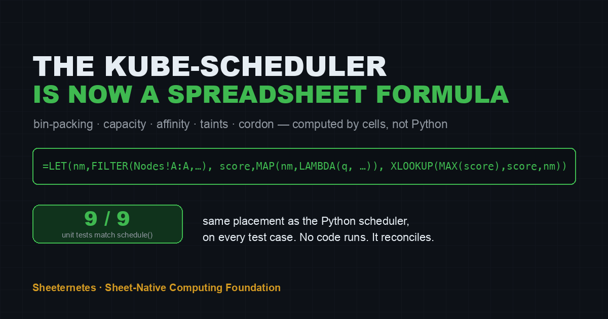
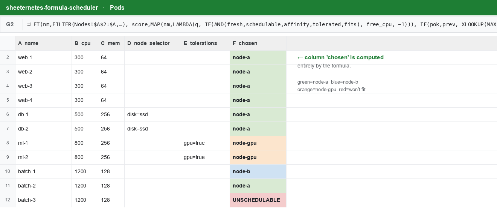
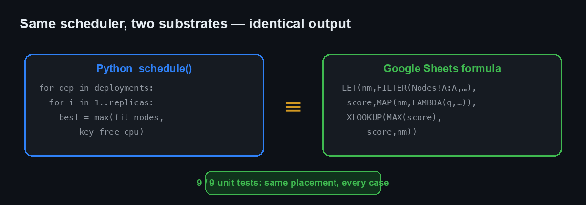
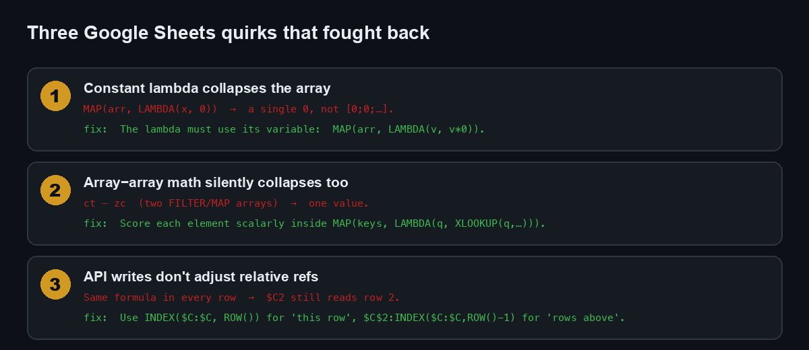

Here’s the thing that had been bugging me about Sheeternetes. The whole pitch is “the spreadsheet is the cluster” — Deployments, Nodes, Pods live in tabs, and the sheet is the source of truth. Except it wasn’t the whole truth. The scheduler — the part that actually decides which pod lands on which node — was a Python function reading the sheet from the outside. The sheet stored the state. Python did the thinking.
That’s a cheat, and it nagged at me. So I set out to remove the last
bit of external brain: rewrite the scheduler as a spreadsheet
formula. No Python, no Apps Script, no bash. One
=LET(…) per pod that reads the Nodes tab and decides
placement, using nothing but the functions built into Google Sheets.
It works. It reproduces bin-packing, capacity, spread, sticky placement, cordon, affinity, and taints — and it produces the exact same placement as the real Python scheduler on all nine of its unit tests.

The rule of the game
Sheeternetes’ scheduler is a pure function,
schedule(deployments, nodes, existing). It walks
deployments in order, expands replicas, and for each pod picks a
node:
- sticky — if the pod’s current node is still alive, matches, and has room, keep it there;
- otherwise best-fit — the eligible node with the most free CPU that the pod fits into;
- eligible means fresh, schedulable (not cordoned),
affinity matches (
node_selector⊆ node labels), the pod tolerates the node’sNoScheduletaints, and both CPU and memory fit; - nothing fits → the pod is Unschedulable.
It’s greedy and sequential: each placement consumes capacity, which changes the decision for the next pod. That sequential-accumulation part is exactly what makes “do it in formulas” interesting, because formulas are supposed to be declarative, not step-by-step.
The challenge, then: reproduce a greedy, stateful, order-dependent bin-packer using only cells.
The layout
Two tabs. Nodes is the cluster’s capacity — one row per node:
| name | cpu_total | mem_total | fresh | schedulable | labels | taints |
|---|---|---|---|---|---|---|
| node-a | 4000 | 8192 | TRUE | TRUE | disk=ssd | |
| node-b | 2000 | 4096 | TRUE | TRUE | disk=hdd | |
| node-gpu | 8000 | 16384 | TRUE | TRUE | disk=ssd | gpu=true:NoSchedule |
Pods is one row per replica, in the order the
scheduler would process them. The last column, chosen, is
empty — that’s what the formula fills in.
The trick to greedy accumulation is a growing range. When the formula
in row r needs to know “how much CPU is already committed
on node X,” it sums the rows above it:
SUMIFS($C$2:INDEX($C:$C, ROW()-1), $G$2:INDEX($G:$G, ROW()-1), node)$C$2:INDEX($C:$C, ROW()-1) is the classic expanding
range — rows 2 through “one above me.” Because row r only
ever looks at rows < r, there’s no circular reference;
the sheet just evaluates top to bottom, each pod seeing the ones already
placed. That single idea turns a spreadsheet into a sequential
bin-packer.
The formula
For each pod, score every node scalarly, then pick the best:
=LET(
nm, FILTER(Nodes!$A$2:$A, Nodes!$A$2:$A<>""), /* names, capacities, flags … */
creq, INDEX($C:$C, ROW()), mreq, INDEX($D:$D, ROW()),
sel, INDEX($E:$E, ROW()), tol, INDEX($F:$F, ROW()), prev, INDEX($H:$H, ROW()),
score, MAP(nm, LAMBDA(q,
IF( AND( fresh(q), schedulable(q), not_excluded(q),
affinity_ok(q), tolerates(q),
free_cpu(q) >= creq, free_mem(q) >= mreq ),
free_cpu(q), -1 ))),
best, IF(MAX(score) < 0, "", XLOOKUP(MAX(score), score, nm)),
IF(sticky_ok(prev), prev, best)
)MAP(nm, LAMBDA(q, …)) scores each node; ineligible nodes
get -1; XLOOKUP(MAX(score), score, nm) returns
the winner — and because XLOOKUP returns the first match, ties
break toward the first node in order, exactly like Python’s
max(). Then the sticky check overrides with the previous
node when it’s still valid.
Here it is running on a real cluster — one gold =LET(…)
in the formula bar, and the chosen column filled by the
sheet itself:

Read that placement — it’s not random, it’s the scheduler thinking:
web(4×300m) packs onto node-a;dbneedsdisk=ssd, so it can only go to node-a or node-gpu — but node-gpu is tainted anddbdoesn’t tolerate it, so bothdbland on node-a;mltoleratesgpu=true, so it’s the only thing that lands on node-gpu;batch(1200m each) can’t touch the tainted GPU node; the first goes to node-b (most free CPU at that moment), the second back to node-a, and the third — fits nowhere and comes up red, Unschedulable.
That’s affinity, taints, bin-packing, spread, and capacity — all decided by a formula.
Does it actually match the Python scheduler?
This is the part I actually cared about. The Python
schedule() ships with a unit-test suite — spread, capacity
bin-packing, memory as a constraint, cordon-keeps-existing, affinity
pins, taint repels, toleration allows, too-big-is-unschedulable. So I
built a harness that runs each test case through both
schedulers and diffs the placement.

Nine out of nine. Same pod on the same node, every
case. Plus the richer multi-deployment demo above, which I also checked
against Python: identical, down to which batch replica gets
orphaned. The formula isn’t an approximation of the scheduler — on these
cases it is the scheduler.
Three quirks that fought back
Getting there meant losing an afternoon to Google Sheets’ array semantics, which collapse in ways that don’t announce themselves. If you ever do this, here’s what will bite you:

- A constant lambda collapses the array.
MAP(arr, LAMBDA(x, 0))returns a single0, not a vector — if the lambda ignores its variable, Sheets quietly gives you a scalar. Make the lambda use it:MAP(arr, LAMBDA(v, v*0)). - Array-minus-array collapses too. Subtracting two
FILTER/MAPvectors (ct - zc), both two elements long, gave me one value. The fix that made everything robust: never do array-to-array arithmetic — compute each element scalarly insideMAP(keys, LAMBDA(q, XLOOKUP(q, …))). - API writes don’t adjust relative references. I
wrote the same formula string into every row via the Sheets API — no
fill-down — so
$C2in row 3 still pointed at row 2. Half a scenario placed pods based on the wrong pod’s data. UseINDEX($C:$C, ROW())for “this row” and the expanding$C$2:INDEX($C:$C, ROW()-1)for “rows above.”
None of these throw an error. They just give you a wrong answer with total confidence, which is the worst kind. A benchmark that only confirms your priors isn’t a benchmark, and a formula that silently returns a scalar isn’t a bug report — you find it by diffing against the thing you trust.
Why bother
Because it closes the gap in the joke. “The spreadsheet is the
cluster” was always a little dishonest while the scheduler ran in
Python. Now the sheet doesn’t just hold the desired state — it
computes the placement. Change a replicas count
and the neighbouring cells re-derive which node each pod belongs on,
live, with no process running anywhere. That’s about as sheet-native as
scheduling gets.
And underneath the absurdity there’s a genuinely useful lesson about
greedy algorithms in spreadsheets: the expanding-range trick
(A$2:INDEX(A:A, ROW()-1)) is how you do any sequential
accumulation — running placement, running balance, running anything — in
cells, without a script. I did not expect a container scheduler to teach
me that, but here we are.
Do not schedule production pods with a spreadsheet formula. Do read the formula — it’s a surprisingly clear way to see what a scheduler actually decides.
Try the live sheet, poke the numbers, watch the placement change: the demo is public and read-only.
Join in
- Sheeternetes: github.com/sncfoundation/sheeternetes
- The foundation: sncfoundation.github.io · github.com/sncfoundation
- Slack sheetncf, Telegram t.me/stncf, LinkedIn company/sheetncf
New here? Sheeternetes is a container orchestrator whose entire control plane lives inside a spreadsheet — Deployments, Nodes, Pods and Events are tabs, a scheduler reads and writes cells, and real Docker containers run on the other end. It’s part of the Sheet-Native Computing Foundation (SNCF), a working parody of the CNCF: 30+ projects, a container standard, certification, live demos.
It reconciles.